Coordenadas, distancias y rectas
Capítulo 3 · Parte I. Fundamentos: de los reales a la geometría
El plano cartesiano transforma propiedades algebraicas en lugares geométricos. La distancia euclidiana y la pendiente proporcionan dos herramientas esenciales para describir rectas y circunferencias.
Grabaciones de referencia: grabación de la cátedra 3.1, grabación de la cátedra 3.2.
Procedencia de este tramo: cátedra 3.1.
Del cuerpo ordenado al plano cartesiano
En la cátedra (08:00–13:17). Durante las primeras semanas se habían establecido los axiomas de cuerpo y de orden de \(\mathbb R\). La propiedad de completitud se reserva para la semana ocho. El profesor recuerda que, en consecuencia, la existencia de raíces cuadradas positivas se ha empleado provisionalmente antes de su fundamentación posterior. Esta diferencia entre usar una propiedad y haber demostrado su existencia es importante para comprender el orden lógico del curso.
La geometría analítica permite representar figuras del plano mediante ecuaciones e inecuaciones en coordenadas, resolver problemas con técnicas algebraicas y dar una interpretación geométrica a las relaciones obtenidas. Se plantean dos movimientos complementarios: de la geometría a las ecuaciones y de las ecuaciones a los lugares geométricos.
En la planificación docente se anuncian cuatro sesiones de geometría analítica; en la semana 3 corresponden la circunferencia y la recta, temas pertinentes para el primer control. En esta cátedra se desarrolla especialmente la circunferencia; la recta se reserva para la sesión posterior.
Coordenadas de un punto
En la cátedra (13:20–18:14). Se fijan dos ejes perpendiculares que se cortan en el origen \(O=(0,0)\). El eje horizontal es el de las abscisas \(x\) y el vertical es el de las ordenadas \(y\). A cada punto del plano le corresponde un par ordenado \((x,y)\), donde \(x\) mide su posición horizontal e \(y\) su posición vertical. Así se introduce
\[ \boxed{\mathbb R^2=\{(x,y):x\in\mathbb R,\ y\in\mathbb R\}.} \]
La primera coordenada se interpreta en el eje horizontal y la segunda en el vertical. El ejemplo explícito del profesor diferencia \((3,2)\) de \((2,3)\) y agrega el punto \((-3,2)\) para mostrar el efecto del signo de la abscisa. Formalmente,
\[ (x_1,y_1)=(x_2,y_2)\quad\Longleftrightarrow\quad (x_1=x_2)\land(y_1=y_2). \]
En particular, \((3,2)\ne(2,3)\). La colección no ordenada \(\{2,3\}\), propia de la teoría de conjuntos, responde a una convención distinta: en ella los elementos pueden nombrarse en cualquier orden. El par ordenado registra papeles de coordenadas diferenciados.
Ampliación de precisión. En teoría de conjuntos es posible construir formalmente un par ordenado como cierto conjunto (por ejemplo, mediante la convención de Kuratowski). La advertencia pedagógica de la clase contrasta el par \((2,3)\) con el conjunto ordinario \(\{2,3\}\): ambos objetos tienen criterios de igualdad diferentes.
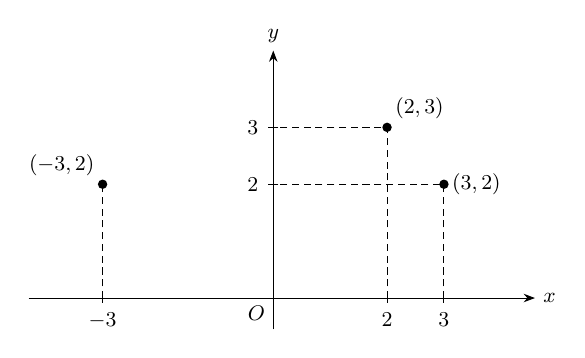
Figura. Coordenadas cartesianas: el orden y el signo de las componentes determinan puntos distintos.
Los lugares geométricos: una condición sobre pares ordenados
En la cátedra (18:27–21:17). Un lugar geométrico en el plano es un conjunto de puntos caracterizado por una condición sobre sus coordenadas. Si \(P(x,y)\) es una propiedad, escribimos
\[ L_P=\{(x,y)\in\mathbb R^2:P(x,y)\}. \]
Esta forma de expresar conjuntos traduce una figura a un problema lógico y algebraico. La condición puede ser una ecuación, una inecuación o una composición de condiciones unidas mediante \(\land\) (conjunción) o \(\lor\) (disyunción). Su interpretación en conjuntos emplea intersecciones y uniones, respectivamente.
Los siete lugares elementales de la clase
En la cátedra (21:20–34:44). La sucesión de ejemplos hace visible el papel de cada condición:
- \(A_1=\{(x,y):x=0\land y=0\}=\{(0,0)\}\): el origen.
- \(A_2=\{(x,y):x=0\}=\{(0,y):y\in\mathbb R\}\): el eje de las ordenadas.
- \(A_3=\{(x,y):y=0\}=\{(x,0):x\in\mathbb R\}\): el eje de las abscisas.
- \(A_4=\{(x,y):xy=0\}=A_2\cup A_3\): la unión de ambos ejes.
- \(A_5=\{(x,y):x>0\land y>0\}\): el primer cuadrante abierto.
- \(A_6=\{(x,y):x=a\}=\{(a,y):y\in\mathbb R\}\): una recta vertical, para un \(a\) fijo.
- \(A_7=\{(x,y):y=b\}=\{(x,b):x\in\mathbb R\}\): una recta horizontal, para un \(b\) fijo.
La identidad \(xy=0\iff(x=0)\lor(y=0)\) explica el cuarto ejemplo por la propiedad del producto nulo demostrada en la primera semana. La conjunción \(x=0\land y=0\) corresponde a la intersección de ambos ejes y produce el origen. La diferencia entre \(x=0\) en \(\mathbb R\), que selecciona un real, y \(x=0\) en \(\mathbb R^2\), que selecciona toda una recta, muestra la importancia del dominio ambiente.
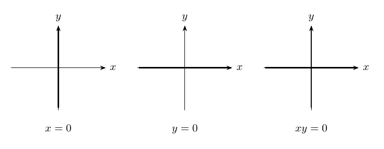
Figura. Lugares geométricos de \(x=0\), \(y=0\) y \(xy=0\): eje vertical, eje horizontal y unión de ambos.
Los cuatro cuadrantes
Los cuadrantes abiertos se caracterizan por los signos de las coordenadas:
| Cuadrante | Condición |
|---|---|
| I | \(x>0\), \(y>0\) |
| II | \(x<0\), \(y>0\) |
| III | \(x<0\), \(y<0\) |
| IV | \(x>0\), \(y<0\) |
Ampliación editorial. Las desigualdades estrictas describen cuadrantes abiertos: cada uno contiene puntos interiores con las dos coordenadas del signo indicado. Los ejes conforman sus fronteras. La condición \(x\ge0\land y\ge0\) incorpora los semiejes positivos y el origen.
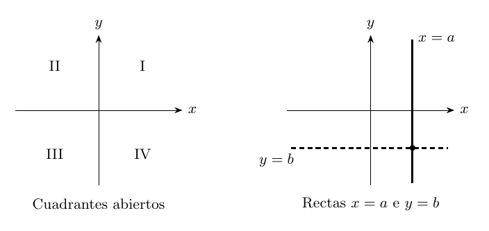
Figura. Cuadrantes y ejemplos de rectas definidas mediante una coordenada constante.
La distancia euclidiana en el plano
Deducción desde Pitágoras
En la cátedra (35:34–42:53). Sean \(A=(x_1,y_1)\) y \(B=(x_2,y_2)\). El profesor considera un dibujo donde \(x_2>x_1\) e \(y_2>y_1\) y reconoce que esa disposición representa un caso particular. La fórmula resultante se propone para cualesquiera puntos, independientemente del orden de sus coordenadas.
Se traza el punto auxiliar \(C=(x_2,y_1)\). Los segmentos \(AC\) y \(CB\) son perpendiculares; sus longitudes son
\[ |x_2-x_1|\qquad\text{y}\qquad |y_2-y_1|. \]
La distancia entre \(A\) y \(B\) es la hipotenusa del triángulo rectángulo \(ACB\). Por el teorema de Pitágoras,
\[ d(A,B)^2=|x_2-x_1|^2+|y_2-y_1|^2. \]
Como \(|u|^2=u^2\) para todo real \(u\), obtenemos
\[ \boxed{d(A,B)=\sqrt{(x_2-x_1)^2+(y_2-y_1)^2}.} \]
La raíz cuadrada designa aquí el valor mayor o igual que cero cuyo cuadrado coincide con la suma de cuadrados. En los casos \(A=B\), el resultado es \(0\); para puntos distintos, es estrictamente positivo.
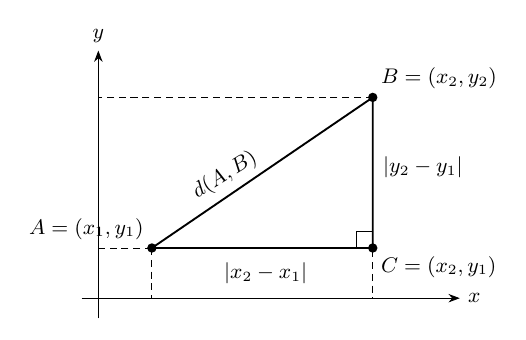
Figura. La distancia euclidiana es la hipotenusa del triángulo rectángulo con catetos \(|x_2-x_1|\) y \(|y_2-y_1|\).
Propiedades elementales de la fórmula — ampliación
Simetría: el intercambio de \(A\) y \(B\) conserva cada cuadrado, luego \(d(A,B)=d(B,A)\).
Reconocimiento de puntos iguales: \(d(A,B)=0\) si y solo si \((x_2-x_1)^2+(y_2-y_1)^2=0\). Ambos cuadrados son mayores o iguales que cero, por lo que cada uno debe valer cero. Se deduce \(x_1=x_2\), \(y_1=y_2\), y así \(A=B\).
Coordenadas compartidas: si \(y_1=y_2\), la fórmula toma la forma \(d(A,B)=|x_2-x_1|\); si \(x_1=x_2\), toma la forma \(d(A,B)=|y_2-y_1|\). La distancia lineal en \(\mathbb R\) aparece como caso particular de la distancia plana.
Ejemplo resuelto. Para \(A=(-2,1)\) y \(B=(4,9)\),
\[ d(A,B)=\sqrt{(4+2)^2+(9-1)^2}=\sqrt{36+64}=10. \]
La circunferencia como lugar geométrico
Centro, radio y condición de equidistancia
En la cátedra (43:17–47:17). Se fija un centro \(A=(x_0,y_0)\in\mathbb R^2\) y un radio \(r>0\). La circunferencia de centro \(A\) y radio \(r\) es el lugar geométrico de los puntos cuya distancia al centro vale \(r\):
\[ \boxed{\mathcal C(A,r)=\{P=(x,y)\in\mathbb R^2:d(P,A)=r\}.} \]
La fórmula de distancia traduce la condición geométrica a
\[ \sqrt{(x-x_0)^2+(y-y_0)^2}=r. \]
En la convención empleada durante la clase, el radio es estrictamente positivo. Si se toma \(r=0\), el lugar resultante está formado por el único punto \(A\); el profesor prefiere denominarlo sencillamente punto y reservar «circunferencia» para los radios positivos.
La región formada por los puntos cuya distancia al centro es menor que \(r\) corresponde al interior. La región \(d(P,A)\le r\) comprende el disco cerrado o círculo con borde. En adelante distinguiremos expresamente el borde de la región interior.
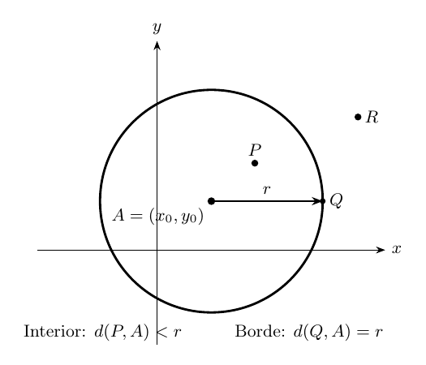
Figura. Circunferencia, centro y radio; distinción entre puntos interiores, del borde y exteriores.
Por qué la ecuación puede elevarse al cuadrado
En la cátedra (49:39–1:01:59). Para reales cualesquiera \(u,v\), la igualdad \(u=v\) implica \(u^2=v^2\). Su recíproca requiere examinar los signos: por diferencia de cuadrados,
\[ u^2=v^2\iff (u-v)(u+v)=0\iff(u=v)\lor(u=-v). \]
Por ejemplo, \(u=-2\) y \(v=2\) tienen cuadrados iguales, aunque representan reales distintos. Por ello, al elevar arbitrariamente una ecuación al cuadrado se puede ampliar el conjunto solución. Si se conoce previamente que \(u\ge0\) y \(v\ge0\), entonces
\[ \boxed{u=v\quad\Longleftrightarrow\quad u^2=v^2.} \]
Prueba de la recíproca bajo la restricción de signo. De \(u^2=v^2\) sigue \(u=v\) o \(u=-v\). En el segundo caso, \(u\ge0\) y \(v\ge0\) implican \(u=v=0\), de modo que también se tiene \(u=v\).
En la ecuación de distancia, tanto la raíz cuadrada como el radio \(r\) son mayores o iguales que cero; por eso sí se conserva la equivalencia al elevar al cuadrado. Así se obtiene la ecuación canónica de la circunferencia:
\[ \boxed{(x-x_0)^2+(y-y_0)^2=r^2,\qquad r>0.} \]
Precisión lógica. Una demostración que transforma una ecuación con el signo \(\Longleftrightarrow\) conserva exactamente su conjunto solución. Al transformar solo mediante una implicación puede obtenerse un conjunto que incluya soluciones adicionales. El docente relaciona esta diferencia con la igualdad de conjuntos, demostrada por doble inclusión.
Ejemplo de ampliación del lugar por elevar al cuadrado
La condición \(y=x\) determina una recta. La condición \(y^2=x^2\) equivale a \((y=x)\lor(y=-x)\): determina dos rectas. En particular, \((-2,2)\) satisface \(y^2=x^2\) y pertenece a la segunda recta, mientras que su coordenada \(y\) es diferente de \(x\). Es el contraejemplo que desarrolla el profesor en 57:50.
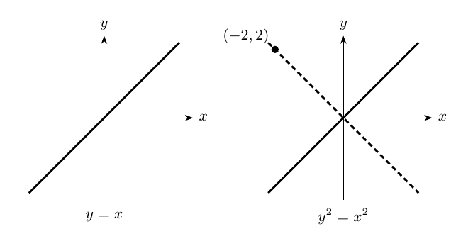
Figura. Al elevar al cuadrado \(y=x\) aparece la recta adicional \(y=-x\); el punto \((-2,2)\) verifica únicamente la ecuación cuadrada.
Los cuatro ejemplos de circunferencias de la clase
En la cátedra (1:02:37–1:16:28). Después de un corte técnico de la transmisión, el profesor desarrolla cuatro ecuaciones de dificultad creciente. Conviene distinguir cuidadosamente los enunciados verbalizados de las lecturas que sugiere la explicación:
Ejemplo 1. Lectura directa
\[ (x-1)^2+(y-2)^2=3^2. \]
Comparando con la ecuación canónica, el centro es \(A=(1,2)\) y el radio es \(r=3\).
Ejemplo 2. Discrepancia en la transcripción o el enunciado oral
Aproximadamente en 1:10:20 se reconoce verbalmente el enunciado \(x^2+y^2=-1\), seguido de una discusión que identifica centro en el origen y radio \(1\). Estas dos afirmaciones corresponden a ecuaciones distintas:
- Si el enunciado es \(x^2+y^2=-1\), el conjunto solución es \(\varnothing\): cada cuadrado es mayor o igual que cero, por lo que su suma también lo es.
- Si el enunciado es \(x^2+y^2=(-1)^2=1\), el centro es \((0,0)\) y el radio es \(1\); elevar \(-1\) al cuadrado produce exactamente \(1\).
La secuencia oral del docente se ajusta a la segunda interpretación, pero se conserva explícita la discrepancia. Para decidir la escritura exacta de la pizarra haría falta cotejar la imagen correspondiente del video.
Ejemplo 3. Identificación de signos y cuadrados
\[ (x+3)^2+(y+4)^2=(-5)^2. \]
La expresión \((x+3)^2\) puede escribirse \((x-(-3))^2\) y análogamente para \(y\). Como \((-5)^2=25\), el centro es \((-3,-4)\) y el radio es \(5\).
Ejemplo 4. Completación de un cuadrado
El profesor considera
\[ x^2+y^2=-2x. \]
Pasamos todos los términos al lado izquierdo y agrupamos los que contienen \(x\):
\[ x^2+2x+y^2=0. \]
Introducimos simultáneamente \(+1\) y \(-1\), operación que el profesor llama «ni quita ni pone»:
\[ \begin{aligned} x^2+2x+y^2=0 &\iff x^2+2x+1+y^2=1\\ &\iff (x+1)^2+y^2=1. \end{aligned} \]
Por lo tanto, centro \((-1,0)\) y radio \(1\). Durante la explicación se escucha fugazmente «menos uno, uno» al nombrar el centro; el cálculo escrito conduce a \((-1,0)\). Esta precisión es editorial y está apoyada en la ecuación que el docente ha demostrado.
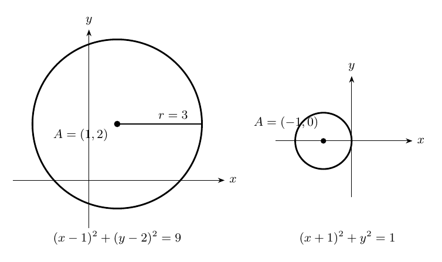
Figura. Dos ejemplos de la cátedra: circunferencia de centro \((1,2)\) y radio \(3\), y circunferencia de centro \((-1,0)\) y radio \(1\).
De la ecuación canónica a la ecuación general
En la cátedra (1:16:34–1:20:20). Expandimos ambos cuadrados de
\[ (x-x_0)^2+(y-y_0)^2=r^2. \]
Aplicando la fórmula del cuadrado de un binomio,
\[ x^2-2x_0x+x_0^2+y^2-2y_0y+y_0^2=r^2. \]
Al reagrupar se obtiene
\[ x^2+y^2+(-2x_0)x+(-2y_0)y+(x_0^2+y_0^2-r^2)=0. \]
Con los nombres \(A=-2x_0\), \(B=-2y_0\) y \(C=x_0^2+y_0^2-r^2\), toda circunferencia se expresa mediante
\[ \boxed{x^2+y^2+Ax+By+C=0.} \]
Esta es la forma general o desarrollada de la ecuación. La cuestión inversa, que ocupa el resto de la clase, es determinar qué lugar geométrico describe dicha ecuación para valores arbitrarios de \(A,B,C\in\mathbb R\).
Clasificación completa mediante dos cuadrados
Transformación por equivalencias
En la cátedra (1:21:21–1:29:03). Para \(A,B,C\in\mathbb R\) dados, estudiemos
\[ M=\{(x,y)\in\mathbb R^2:x^2+y^2+Ax+By+C=0\}. \]
Reordenamos términos para completar dos cuadrados independientes. La identidad central para cada variable es
\[ x^2+Ax=\left(x+\frac A2\right)^2-\frac{A^2}{4}. \]
Y también
\[ y^2+By=\left(y+\frac B2\right)^2-\frac{B^2}{4}. \]
Sustituyendo y trasladando las constantes, cada paso es reversible:
\[ \begin{aligned} x^2+y^2+Ax+By+C=0 &\iff \left(x+\frac A2\right)^2-\frac{A^2}{4} +\left(y+\frac B2\right)^2-\frac{B^2}{4}+C=0\\ &\iff \boxed{\left(x+\frac A2\right)^2+\left(y+\frac B2\right)^2 =\frac{A^2+B^2-4C}{4}.} \end{aligned} \]
Introducimos los parámetros
\[ H=\left(-\frac A2,-\frac B2\right),\qquad D=A^2+B^2-4C. \]
La ecuación pasa a la forma \(d((x,y),H)^2=D/4\). El signo de \(D\) determina por completo el lugar geométrico. Este \(D\) se introduce aquí como abreviatura editorial de la expresión que aparece en clase, para favorecer el análisis de casos; funciona como parámetro de clasificación del lugar circular.
Caso I: una circunferencia (\(D>0\))
Si \(D>0\), la cantidad \(D/4\) es positiva y existe un radio real positivo
\[ r=\frac{\sqrt D}{2}. \]
Así, \(M\) es la circunferencia de centro \(H\) y radio \(r\). Es una figura con infinitos puntos que están a la misma distancia \(r\) de \(H\):
\[ \boxed{M=\mathcal C\!\left(\left(-\tfrac A2,-\tfrac B2\right),\tfrac{\sqrt{A^2+B^2-4C}}2\right).} \]
La existencia de \(\sqrt D\) para \(D>0\) se utiliza en el nivel de la clase, con su justificación mediante completitud reservada para más adelante.
Caso II: un punto (\(D=0\))
Si \(D=0\),
\[ \left(x+\frac A2\right)^2+\left(y+\frac B2\right)^2=0. \]
Como cada cuadrado es mayor o igual que cero, la igualdad equivale a las dos condiciones simultáneas
\[ x=-\frac A2,\qquad y=-\frac B2. \]
El lugar consiste en un solo punto:
\[ \boxed{M=\left\{\left(-\tfrac A2,-\tfrac B2\right)\right\}.} \]
La clase contempla la expresión «circunferencia de radio cero» como interpretación degenerada; en estas notas se sigue la elección terminológica del docente y se llama a este lugar punto.
Caso III: conjunto vacío (\(D<0\))
Si \(D<0\), el lado derecho es un real estrictamente negativo y el lado izquierdo una suma de cuadrados mayor o igual que cero. La igualdad es incompatible con los axiomas del orden; de ahí
\[ \boxed{M=\varnothing.} \]
La condición de tricotomía fundamenta la separación excluyente entre los tres casos. La conclusión puede resumirse en la siguiente tabla:
| Signo de \(D=A^2+B^2-4C\) | Lugar geométrico | Parámetros |
|---|---|---|
| \(D>0\) | Circunferencia | Centro \((-A/2,-B/2)\); radio \(\sqrt D/2\) |
| \(D=0\) | Punto | \((-A/2,-B/2)\) |
| \(D<0\) | Conjunto vacío | Sin puntos del plano |
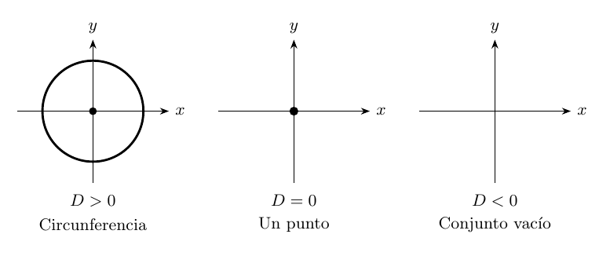
Figura. Clasificación de \(x^2+y^2+Ax+By+C=0\) según \(D=A^2+B^2-4C\): circunferencia, punto o conjunto vacío.
Consecuencias conceptuales y conexiones
Primera conexión: ecuaciones y conjuntos. Cada cadena de equivalencias corresponde a una descripción distinta del mismo lugar geométrico. En cambio, una implicación unidireccional puede describir un conjunto de soluciones más amplio. Este cuidado es esencial al elevar ecuaciones al cuadrado y al multiplicar por expresiones cuyo valor podría anularse.
Segunda conexión: geometría de la condición algebraica. La expresión \(x^2+y^2+Ax+By+C\) contiene la distancia cuadrática al punto \((-A/2,-B/2)\) una vez que se completa el cuadrado. La clasificación geométrica nace del signo de un número calculado exclusivamente a partir de los coeficientes.
Tercera conexión: circunferencia y círculo. Si \(r>0\), la ecuación
\[ (x-x_0)^2+(y-y_0)^2=r^2 \]
caracteriza el borde. Las desigualdades \(\le r^2\) y \(<r^2\) determinan respectivamente el disco cerrado y el disco abierto. Las desigualdades \(\ge r^2\) y \(>r^2\) caracterizan las regiones exteriores correspondientes, incluyendo o excluyendo la circunferencia según el símbolo utilizado.
Cuarta conexión: panorama del curso. El cierre de la sesión, alrededor de 1:39:11, anuncia las rectas como tema de la clase siguiente. La cuestión de la existencia de raíces positivas se recuperará al estudiar completitud.
Solucionario completo y razonado (E1–E16)
E1. Coordenadas y orden
La regla de igualdad de pares exige igualdad componente a componente. Las primeras coordenadas de \((3,2)\) y \((2,3)\) son distintas; las primeras de \((3,2)\) y \((-3,2)\) también lo son. Por tanto, los tres puntos son distintos. La primera coordenada se mide horizontalmente y la segunda verticalmente; \((3,2)\) está tres unidades hacia la derecha y dos hacia arriba, mientras que \((-3,2)\) está tres hacia la izquierda y dos hacia arriba.
E2. Ejes e intersección
El lugar de \(x=0\) es \(E_y=\{(0,y):y\in\mathbb R\}\); el de \(y=0\) es \(E_x=\{(x,0):x\in\mathbb R\}\). Por la propiedad del producto nulo,
\[ \{(x,y):xy=0\}=E_x\cup E_y. \]
La conjunción de ambas ecuaciones identifica \(E_x\cap E_y=\{(0,0)\}\), porque el origen es el único par con ambas coordenadas iguales a cero.
E3. Producto de coordenadas positivo
Por las reglas de signos, \(xy>0\) ocurre cuando ambas coordenadas son positivas o cuando ambas son negativas. Por ello,
\[ \{(x,y):xy>0\} =\{x>0,y>0\}\cup\{x<0,y<0\}, \]
donde la notación \(\{x>0,y>0\}\) abrevia el conjunto de pares que cumplen esas dos condiciones. Son los cuadrantes I y III, con los ejes excluidos debido a que en cualquiera de ellos \(xy=0\).
E4. Una unión de dos rectas
La igualdad \((x-1)(y+2)=0\) equivale a \((x-1=0)\lor(y+2=0)\). Los lugares correspondientes son la recta vertical \(x=1\) y la horizontal \(y=-2\); el conjunto buscado es su unión. Las dos rectas se encuentran en el punto \((1,-2)\).
E5. Distancia y simetría
\[ d((-2,1),(4,9))=\sqrt{(4+2)^2+(9-1)^2} =\sqrt{36+64}=10. \]
Al invertir el orden,
\[ d((4,9),(-2,1))=\sqrt{(-2-4)^2+(1-9)^2}=\sqrt{36+64}=10. \]
Se trata de una comprobación concreta de la simetría de la fórmula.
E6. Distancia nula e igualdad de puntos
Si \(A=B\), sus coordenadas coinciden; ambas diferencias son cero, por lo que \(d(A,B)=0\). Recíprocamente, \(d(A,B)=0\) lleva, tras elevar al cuadrado cantidades no negativas, a
\[ (x_2-x_1)^2+(y_2-y_1)^2=0. \]
Cada sumando es mayor o igual que cero. Una suma de dos reales con esas propiedades vale cero exactamente cuando ambos valen cero. Luego \(x_2-x_1=0\) y \(y_2-y_1=0\), de donde \(A=B\).
E7. Centro y radio dados; comprobación de pertenencia
La ecuación pedida es
\[ \boxed{(x-1)^2+(y-2)^2=9.} \]
El punto \((1,5)\) satisface \(0^2+3^2=9\) y pertenece a la circunferencia. Para \((0,0)\), la suma es \((-1)^2+(-2)^2=5\), que difiere de \(9\); por tanto ese punto queda fuera de la circunferencia. Su distancia al centro es \(\sqrt5\), estrictamente menor que \(3\); se encuentra en el disco interior.
E8. Signos en la forma canónica
\[ (x+3)^2+(y+4)^2=25 \iff (x-(-3))^2+(y-(-4))^2=5^2. \]
El centro es \((-3,-4)\) y el radio \(5\).
E9. Una ecuación sin soluciones y una circunferencia
Para todo \((x,y)\in\mathbb R^2\), se tiene \(x^2+y^2\ge0\); por ello la ecuación \(x^2+y^2=-1\) determina el conjunto vacío. En cambio, \(x^2+y^2=1\) equivale a \((x-0)^2+(y-0)^2=1^2\) y determina una circunferencia de centro \((0,0)\) y radio \(1\). Este ejercicio corresponde a la discrepancia documental señalada en el ejemplo 2.
E10. Circunferencia desplazada sobre el eje horizontal
\[ \begin{aligned} x^2+y^2=-2x &\iff x^2+2x+y^2=0\\ &\iff x^2+2x+1+y^2=1\\ &\iff (x+1)^2+y^2=1. \end{aligned} \]
El centro es \((-1,0)\) y el radio es \(1\). Cada línea se obtiene mediante una operación reversible, por lo que el lugar queda preservado.
E11. Clasificación por dos cuadrados
\[ \begin{aligned} x^2+y^2-6x+8y+9=0 &\iff (x^2-6x+9)+(y^2+8y+16)=16\\ &\iff (x-3)^2+(y+4)^2=16. \end{aligned} \]
Se obtiene una circunferencia con centro \((3,-4)\) y radio \(4\). La línea intermedia suma \(9\) para completar la primera expresión y \(16\) para completar la segunda; se compensan en el otro miembro.
E12. Clasificación del caso degenerado
\[ \begin{aligned} x^2+y^2+2x-4y+5=0 &\iff (x+1)^2+(y-2)^2=0. \end{aligned} \]
La suma de dos cuadrados vale cero exactamente cuando cada cuadrado vale cero. Así \(x=-1\), \(y=2\); el lugar es el punto aislado \(\{(-1,2)\}\).
E13. Clasificación del caso vacío
\[ x^2+y^2+2x-4y+6=0 \iff (x+1)^2+(y-2)^2=-1. \]
El lado izquierdo es mayor o igual que cero y el derecho es estrictamente negativo. La condición determina \(\varnothing\).
E14. Clasificación desde coeficientes generales
Para \(A=4\), \(B=-6\), \(C=4\),
\[ D=A^2+B^2-4C=16+36-16=36>0. \]
El centro es \((-A/2,-B/2)=(-2,3)\) y el radio es \(\sqrt{36}/2=3\). En efecto,
\[ x^2+y^2+4x-6y+4=0 \iff (x+2)^2+(y-3)^2=9. \]
E15. Interior y exterior de una circunferencia
La ecuación \((x-1)^2+(y+2)^2=9\) determina la circunferencia de centro \((1,-2)\) y radio \(3\). La inecuación con \(\le9\) describe el disco cerrado, formado por todos los puntos a distancia menor o igual que \(3\) del centro. La inecuación con \(>9\) describe la región exterior abierta, formada por los puntos a distancia estrictamente mayor que \(3\).
E16. Una transformación no reversible por cuadratura
La diferencia de cuadrados proporciona
\[ x^2=y^2\iff x^2-y^2=0\iff(x-y)(x+y)=0 \iff(x=y)\lor(x=-y). \]
En el plano son las rectas \(y=x\) y \(y=-x\). Por ejemplo, \((x,y)=(-2,2)\) satisface \(x^2=y^2=4\) y pertenece a \(y=-x\); sus coordenadas son diferentes y por eso el punto no pertenece a \(y=x\). La condición cuadrática contiene el lugar original y otro adicional.
Glosario y próximos pasos
Geometría analítica. Estudio de figuras mediante coordenadas y propiedades expresadas por ecuaciones e inecuaciones.
Plano cartesiano. Plano equipado con dos ejes orientados y perpendiculares que permiten asociar a cada punto un par ordenado de reales.
Par ordenado. Objeto \((x,y)\) determinado por una primera y una segunda coordenada; su igualdad se establece componente a componente.
Lugar geométrico. Conjunto de puntos de \(\mathbb R^2\) caracterizado mediante una condición compartida.
Distancia euclidiana. Valor mayor o igual que cero calculado para dos puntos mediante la raíz de la suma de los cuadrados de las diferencias de coordenadas.
Circunferencia. Lugar de los puntos cuya distancia a un centro dado es exactamente un radio fijo positivo.
Ecuación canónica. Escritura \((x-x_0)^2+(y-y_0)^2=r^2\) que presenta explícitamente el centro y el radio.
Ecuación general. Escritura \(x^2+y^2+Ax+By+C=0\) a partir de la expansión de los cuadrados; el signo de \(A^2+B^2-4C\) determina el tipo de lugar.
Completación de cuadrados. Identidad algebraica que expresa un trinomio cuadrático como cuadrado de un binomio más una constante; permite identificar centros, radios y casos degenerados.
Equivalencia de condiciones. Relación lógica bidireccional que garantiza igualdad de conjuntos solución.
Fuentes y límite documental. Jorge San Martín, IC21: Cátedra 3.1 (lunes 29 de marzo de 2021, 12:00), grabación en YouTube y transcripción automática disponible en la página del video. El registro oral se interrumpe brevemente por un problema técnico en torno a 1:03:40 y se reanuda aproximadamente en 1:08:56. Los dos posibles lapsus señalados al comienzo requieren cotejo visual de la pizarra para establecer qué se mostró exactamente; su diagnóstico algebraico es independiente de esa verificación. Las demostraciones y los ejercicios de ampliación se identifican editorialmente y se han contrastado con los resultados algebraicos.
Continuación del curso: la siguiente cátedra aborda las rectas en el plano. La distancia euclidiana y la ecuación de la circunferencia proporcionan el primer modelo completo de traducción entre un lugar geométrico y una ecuación en \(\mathbb R^2\).
Procedencia de este tramo: cátedra 3.2.
La recta como lugar geométrico
En la cátedra (07:42–18:57). La geometría clásica caracteriza una recta mediante sus propiedades, entre ellas la existencia de una única recta por cada par de puntos distintos. La geometría analítica utiliza una ecuación para caracterizar el conjunto de sus puntos. Fijados \(A,B,C\in\mathbb R\) tales que
\[ A^2+B^2>0, \]
se define el lugar geométrico
\[ \boxed{L_{A,B,C}=\{(x,y)\in\mathbb R^2:Ax+By+C=0\}.} \]
La condición \(A^2+B^2>0\) asegura que el par \((A,B)\) aporta una dirección normal bien determinada. Puesto que los cuadrados son no negativos, equivale a la disyunción
\[ \boxed{(A\ne0)\ \lor\ (B\ne0).} \]
Desarrollo lógico de la clase. La identidad \(A^2+B^2=0\) equivale a \((A=0)\land(B=0)\). Al negar ambas expresiones se obtiene, mediante las leyes de De Morgan, la disyunción anterior. El profesor insiste en que al menos uno de \(A,B\) es distinto de cero; son admisibles los tres casos \((0,B)\) con \(B\ne0\), \((A,0)\) con \(A\ne0\), y \((A,B)\) con ambos distintos de cero.
Tres familias de rectas
En la cátedra (19:14–22:50). La ecuación general produce tres tipos geométricos:
- Con \(A=0\), tenemos \(B\ne0\) y \(By+C=0\), equivalente a \(y=-C/B\): recta horizontal.
- Con \(B=0\), tenemos \(A\ne0\) y \(Ax+C=0\), equivalente a \(x=-C/A\): recta vertical.
- Con \(A\ne0\) y \(B\ne0\), la recta presenta variación de ambas coordenadas y se denomina oblicua.
En los dos primeros casos el despeje utiliza el coeficiente cuya condición garantiza que es distinto de cero. Las tres familias pertenecen a la misma definición de lugar geométrico.
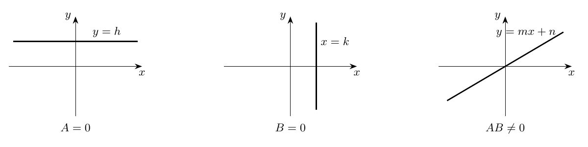
Figura 1. La clasificación procede de los coeficientes de la ecuación general.
Construcción de dos puntos distintos
En la cátedra (22:51–31:13). Cuando \(A,B\ne0\), las intersecciones con los ejes proporcionan candidatos inmediatos:
\[ P=\left(0,-\frac CB\right),\qquad Q=\left(-\frac CA,0\right). \]
Al sustituirlos en \(Ax+By+C\) se obtiene cero. Si \(C\ne0\), las abscisas de \(P,Q\) son distintas y sus ordenadas también. Si \(C=0\), ambos candidatos coinciden en el origen y el profesor propone otra construcción:
\[ P=(0,0),\qquad Q=(B,-A). \]
En efecto, \(A\cdot B+B\cdot(-A)=0\), y las dos coordenadas de \(Q\) son distintas de cero porque \(A,B\ne0\). Esta separación de casos evita concluir unicidad o distinción a partir de dos puntos que podrían coincidir.
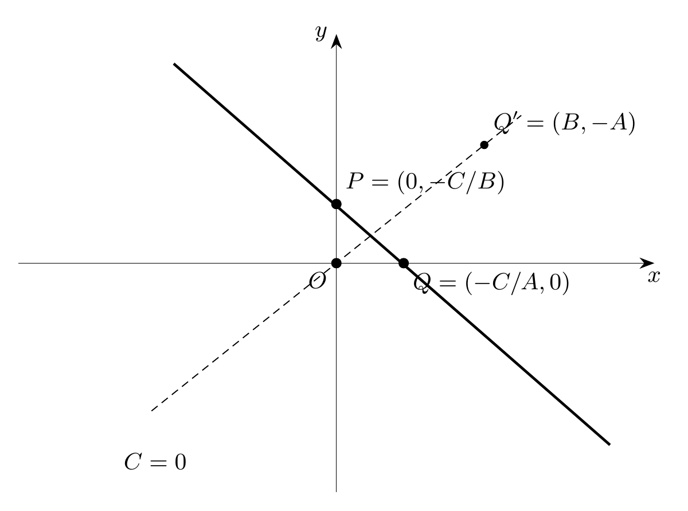
Figura 2. Los interceptos son distintos si \(C\ne0\); cuando \(C=0\), el punto \((B,-A)\) proporciona un segundo punto.
Teorema fundamental: la pendiente
En la cátedra (34:08–49:30). Para una recta no vertical \(Ax+By+C=0\) se tiene \(B\ne0\). Si \(P_1=(x_1,y_1)\) y \(P_2=(x_2,y_2)\) son dos puntos distintos de la recta, su pendiente queda caracterizada por
\[ \boxed{m=\frac{y_2-y_1}{x_2-x_1}=-\frac AB.} \]
El resultado afirma que el cociente de incrementos es el mismo para cualquier elección de dos puntos distintos. La demostración justifica simultáneamente la independencia de los puntos y la existencia del denominador.
Demostración algebraica paso a paso
Como ambos puntos pertenecen al lugar geométrico, cumplen
\[ Ax_1+By_1+C=0,\qquad Ax_2+By_2+C=0. \]
Restamos la primera identidad de la segunda; la constante \(C\) desaparece:
\[ A(x_2-x_1)+B(y_2-y_1)=0. \]
El despeje de las ordenadas es legítimo porque \(B\ne0\):
\[ \boxed{y_2-y_1=-\frac AB(x_2-x_1).} \]
Justificación del divisor \(x_2-x_1\). Si \(x_2=x_1\), la igualdad recién obtenida da \(y_2-y_1=0\); entonces \(y_2=y_1\). Ambos puntos tendrían las mismas coordenadas, contrariamente a que fueron escogidos distintos. Luego \(x_2-x_1\ne0\), y dividimos:
\[ \frac{y_2-y_1}{x_2-x_1}=-\frac AB. \]
El miembro derecho depende de los coeficientes de la recta y permanece fijo al elegir cualquier par de puntos. Queda demostrada la propiedad y legitimado el nombre pendiente para ese número único.
Significado geométrico: triángulos semejantes
En la cátedra (52:12–54:18). Si tres puntos distintos están en una recta no vertical, sus incrementos horizontales y verticales forman triángulos rectángulos semejantes. Cada triángulo cumple la proporción altura/base igual a \(m\) (con signo si el sentido de desplazamiento importa). La constancia del cociente es, por tanto, una expresión algebraica de la alineación de los puntos.
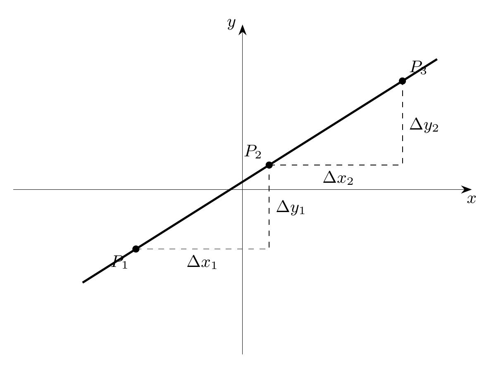
Figura 3. Dos desplazamientos distintos proporcionan el mismo cociente \(\Delta y/\Delta x\).
Incrementos e interpretación del signo
En la cátedra (54:32 y siguientes: comienzo comprobado). La ecuación anterior puede escribirse \(\Delta y=m\Delta x\). Cuando \(\Delta x>0\), el signo de \(m\) determina si el desplazamiento correspondiente en \(y\) es ascendente, horizontal o descendente. Este hecho se aprecia en las tres gráficas siguientes.
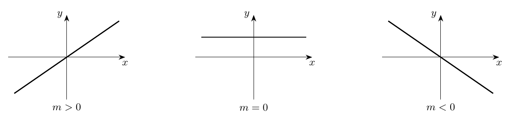
Figura 4. El signo de la pendiente describe el cambio de ordenadas ante un incremento positivo de abscisas.
Formas equivalentes de la ecuación de una recta
Ampliación editorial de sistematización. Las identidades siguientes se deducen del teorema de la pendiente y de la ecuación general; se incluyen para practicar el tránsito de la descripción geométrica a las ecuaciones.
Forma explícita o pendiente–ordenada
Como \(B\ne0\), dividimos la ecuación \(Ax+By+C=0\) por \(B\):
\[ \boxed{y=mx+n,\qquad m=-\frac AB,\quad n=-\frac CB.} \]
El número \(n\) es la ordenada del punto de intersección con el eje vertical: cuando \(x=0\), \(y=n\). La pendiente expresa el cambio \(m\) de la ordenada por cada unidad de incremento horizontal.
Forma punto–pendiente
Si \(P_0=(x_0,y_0)\) pertenece a una recta con pendiente \(m\), todo punto \((x,y)\) de ella satisface
\[ \boxed{y-y_0=m(x-x_0).} \]
Para verificar su equivalencia, se sustituye \(y_0=mx_0+n\) en \(y=mx+n\) y se resta: \(y-y_0=m(x-x_0)\). Recíprocamente, distribuir la última igualdad produce una ecuación explícita con \(n=y_0-mx_0\).
Recta determinada por dos puntos
Para \(P_1=(x_1,y_1)\) y \(P_2=(x_2,y_2)\) con \(x_1\ne x_2\), la pendiente calculada por sus coordenadas conduce a
\[ \boxed{y-y_1=\frac{y_2-y_1}{x_2-x_1}(x-x_1).} \]
Para admitir también una recta vertical, puede emplearse la forma general sin cocientes:
\[ \boxed{(y_2-y_1)(x-x_1)-(x_2-x_1)(y-y_1)=0.} \]
Si \(x_1=x_2\), esta ecuación representa la recta \(x=x_1\); si \(y_1=y_2\), representa \(y=y_1\). La condición de puntos distintos asegura que ambos incrementos no se anulan simultáneamente.
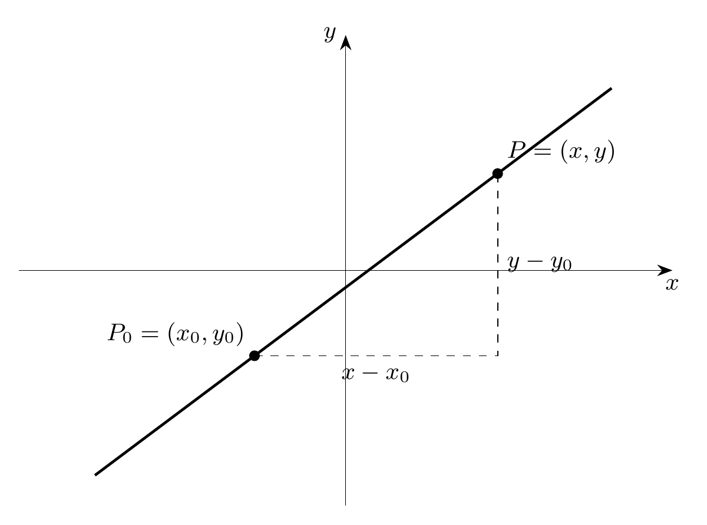
Figura 5. La ecuación \(y-y_0=m(x-x_0)\) es una relación entre el desplazamiento desde \(P_0\) y la pendiente.
Propiedades y aplicaciones geométricas
Ampliación editorial. Se completan las consecuencias algebraicas más útiles de la definición de pendiente.
Rectas paralelas y perpendiculares
Dos rectas no verticales con pendientes \(m_1,m_2\) son paralelas cuando tienen igual pendiente. La igualdad \(m_1=m_2\) determina la misma dirección; para que sean rectas distintas sus ordenadas al origen deben diferir.
Dos rectas con pendientes finitas y distintas de cero son perpendiculares cuando
\[ \boxed{m_1m_2=-1.} \]
Una demostración usa los vectores directores \(u_1=(1,m_1)\) y \(u_2=(1,m_2)\): su producto escalar es \(1+m_1m_2\), que vale cero exactamente en el caso perpendicular. La pareja vertical \(x=k\) y horizontal \(y=h\) es también perpendicular.
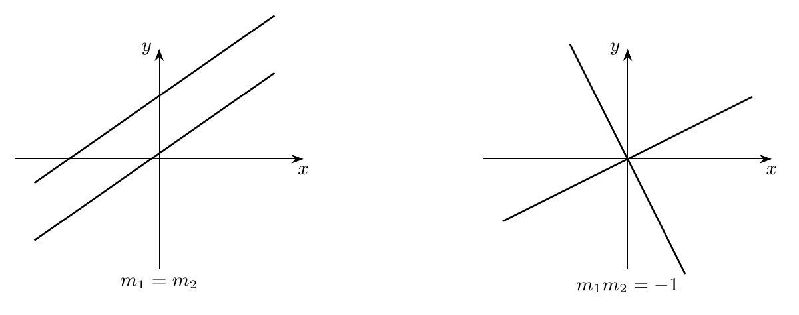
Figura 6. Igualdad de pendientes y ortogonalidad de direcciones.
Intersección de dos rectas
Sean \(L_i:A_ix+B_iy+C_i=0\), \(i=1,2\), y defínase
\[ D=A_1B_2-A_2B_1. \]
Si \(D\ne0\), las ecuaciones tienen un punto común único. Por eliminación (o por la regla de Cramer):
\[ \boxed{x=\frac{B_1C_2-B_2C_1}{D},\qquad y=\frac{A_2C_1-A_1C_2}{D}.} \]
Si \(D=0\), los vectores normales \((A_1,B_1)\) y \((A_2,B_2)\) son proporcionales. Las rectas tienen entonces la misma dirección; serán coincidentes cuando la proporción incluya las constantes \(C_i\), y paralelas distintas cuando estas definan lugares diferentes.
Distancia de un punto a una recta
Para \(P=(p,q)\) y \(L:Ax+By+C=0\), con \(A^2+B^2>0\), la distancia euclidiana es
\[ \boxed{d(P,L)=\frac{|Ap+Bq+C|}{\sqrt{A^2+B^2}}.} \]
Esta fórmula se obtiene proyectando el vector que une \(P\) con un punto de \(L\) sobre el vector normal \((A,B)\). Se incorpora como aplicación avanzada y conserva la conexión con la distancia euclidiana estudiada en la Cátedra 3.1.
Síntesis de estudio
La cátedra transforma una ecuación lineal en un objeto geométrico. El encadenamiento conceptual comienza con \(A^2+B^2>0\), pasa por la clasificación de rectas, construye puntos pertenecientes al lugar, demuestra que el cociente \(\Delta y/\Delta x\) es constante para rectas no verticales y asocia a ese número el nombre pendiente. La similitud de triángulos aporta la lectura geométrica de la misma propiedad algebraica.
En las ampliaciones, las fórmulas \(y=mx+n\), \(y-y_0=m(x-x_0)\) y la ecuación por dos puntos permiten invertir la dirección del razonamiento: datos geométricos determinan ecuaciones concretas. Paralelismo, perpendicularidad e intersecciones se describen mediante relaciones entre coeficientes.
Control de rigor. Toda división se realiza después de constatar que el denominador es distinto de cero. La distinción entre implicación y equivalencia preserva el conjunto solución cuando se transforman ecuaciones. Las fórmulas de pendiente finita corresponden a rectas no verticales; la ecuación general incluye también las verticales.
Fuente principal: Jorge San Martín, IC21: Cátedra 3.2 (31 de marzo de 2021), lista Introducción al Cálculo (base 2021). La reconstrucción de la primera parte se apoya en la transcripción automática recuperada. Las secciones expresamente tituladas ampliación editorial contienen sistematizaciones y problemas añadidos para el estudio.
Taller de problemas y soluciones
Los ejercicios se presentan a continuación según la fuente de origen; las ampliaciones editoriales de cada apuntes permanecen expresamente identificadas.
Ejercicios propuestos para el estudio — cátedra 3.1
Los dieciséis ejercicios siguientes son una elaboración editorial. Algunos retoman ejemplos del profesor y otros consolidan y extienden los métodos estudiados; sus soluciones aparecen íntegramente a continuación. Se recomienda intentar cada problema antes de leer el solucionario.
E1. Determinar cuáles de los pares \((3,2)\), \((2,3)\) y \((-3,2)\) coinciden e interpretar sus coordenadas.
E2. Identificar los lugares de \(x=0\), \(y=0\), \(xy=0\) y \(x=0\land y=0\), justificando las relaciones de conjuntos.
E3. Describir el lugar \(xy>0\) y decidir qué ocurre con los ejes.
E4. Interpretar geométricamente \((x-1)(y+2)=0\).
E5. Calcular la distancia entre \((-2,1)\) y \((4,9)\); verificar su invariancia al permutar los puntos.
E6. Probar que \(d(A,B)=0\) si y solo si \(A=B\), usando la fórmula euclidiana.
E7. Hallar la ecuación de la circunferencia de centro \((1,2)\) y radio \(3\); comprobar si \((1,5)\) y \((0,0)\) pertenecen a ella.
E8. Encontrar centro y radio de \((x+3)^2+(y+4)^2=25\).
E9. Clasificar el lugar \(x^2+y^2=-1\) y comparar con \(x^2+y^2=1\).
E10. Llevar \(x^2+y^2=-2x\) a la forma canónica y señalar centro y radio.
E11. Clasificar el lugar \(x^2+y^2-6x+8y+9=0\).
E12. Clasificar \(x^2+y^2+2x-4y+5=0\).
E13. Clasificar \(x^2+y^2+2x-4y+6=0\).
E14. Para \(A=4\), \(B=-6\), \(C=4\), determinar centro y radio del lugar \(x^2+y^2+Ax+By+C=0\).
E15. Describir en \(\mathbb R^2\) los lugares \((x-1)^2+(y+2)^2\le9\) y \((x-1)^2+(y+2)^2>9\).
E16. Justificar que la ecuación \(x^2=y^2\) describe dos rectas y construir un punto que satisfaga esa ecuación y no \(x=y\).
Ejercicios propuestos y soluciones detalladas — cátedra 3.2
Los ejercicios E1–E16 son una colección de práctica editorial: retoman los resultados demostrados en clase y sus consecuencias. La fuente de la cátedra se identifica cuando se usa una construcción efectivamente explicada por el profesor. Los dibujos acompañan la interpretación, mientras que las pruebas algebraicas determinan los resultados.
E1. Clasificar una recta por sus coeficientes
Problema. Identificar el tipo de recta dado por \(3x-6=0\), por \(-2y+8=0\) y por \(2x+3y-12=0\).
Solución. En \(3x-6=0\) el coeficiente de \(y\) es cero y el de \(x\) vale \(3\): la recta vertical es \(x=2\). En \(-2y+8=0\) el coeficiente de \(x\) es cero y el de \(y\) vale \(-2\): la recta horizontal es \(y=4\). En \(2x+3y-12=0\) ambos coeficientes son distintos de cero: es oblicua y su pendiente vale \(-2/3\). La clasificación procede directamente del análisis de los tres casos de la cátedra.
E2. Interpretar correctamente \(A^2+B^2>0\)
Problema. Demostrar que \(A^2+B^2>0\) equivale a \(A\ne0\) o \(B\ne0\).
Solución. La propiedad de orden establece \(A^2,B^2\ge0\). Si al menos uno de los dos números es distinto de cero, su cuadrado es positivo, y al sumar el otro cuadrado (no negativo) se obtiene una suma positiva. Recíprocamente, si la suma es positiva, al menos uno de sus sumandos es positivo: el correspondiente real tiene cuadrado positivo y es distinto de cero. Así quedan demostradas ambas implicaciones. La disyunción es inclusiva: abarca también el caso donde ambos son distintos de cero.
E3. Dos puntos en el caso \(C=0\)
Problema. Para \(Ax+By=0\), con \(A,B\ne0\), comprobar que \((0,0)\) y \((B,-A)\) pertenecen a la recta y son distintos.
Solución. Sustituir \((0,0)\) produce \(A\cdot0+B\cdot0=0\). En el segundo punto la expresión es \(AB+B(-A)=AB-AB=0\). Como \(B\ne0\), la abscisa del segundo punto difiere de la del origen; asimismo \(-A\ne0\) asegura distinta ordenada. Ambos puntos son miembros distintos del lugar geométrico. Esta es la construcción utilizada en la clase alrededor de 29:18.
E4. Interceptos de una recta oblicua
Problema. Encontrar los puntos donde \(2x+3y-12=0\) corta los ejes.
Solución. En el eje \(x\) se tiene \(y=0\), de modo que \(2x-12=0\) y \(x=6\). La intersección es \((6,0)\). En el eje \(y\) se tiene \(x=0\), de modo que \(3y-12=0\) y \(y=4\). La segunda intersección es \((0,4)\). Verificación: \(2(6)+3(0)-12=0\) y \(2(0)+3(4)-12=0\). La recta pasa por esos dos puntos distintos.
E5. Calcular la pendiente desde dos puntos
Problema. Hallar la pendiente de la recta por \(P=(-1,2)\) y \(Q=(3,6)\).
Solución. La diferencia de ordenadas es \(6-2=4\) y la de abscisas es \(3-(-1)=4\). Por lo tanto \(m=4/4=1\). Si intercambiamos el orden de los puntos, \(m=(2-6)/(-1-3)=(-4)/(-4)=1\). El valor se conserva porque numerador y denominador cambian de signo simultáneamente.
E6. Pendiente de una ecuación general
Problema. Para \(6x-4y+7=0\), calcular la pendiente y la forma explícita.
Solución. Como \(B=-4\ne0\), la recta posee pendiente \(m=-A/B=-6/(-4)=3/2\). Despejando: \(-4y=-6x-7\) y, al dividir por \(-4\), \(y=(3/2)x+7/4\). Ambas expresiones coinciden en el coeficiente de \(x\) y son equivalentes para todos los puntos del plano.
E7. Recuperar la ecuación desde punto y pendiente
Problema. Determinar la recta de pendiente \(-2\) que pasa por \((1,3)\).
Solución. Por la forma punto–pendiente, \(y-3=-2(x-1)\). Distribuyendo: \(y-3=-2x+2\) y luego \(y=-2x+5\). Su forma general es \(2x+y-5=0\). El punto dado satisface \(2(1)+3-5=0\), y el coeficiente de \(x\) en la forma explícita es la pendiente prescrita.
E8. Recta por dos puntos sin dividir por cero
Problema. Determinar la recta que pasa por \((2,-1)\) y \((2,5)\).
Solución. Ambos puntos comparten abscisa \(x=2\), por lo que el lugar es la recta vertical \(x=2\). Su ecuación general es \(x-2=0\). El cociente \((5-(-1))/(2-2)\) tiene denominador cero y, por esa razón, la fórmula de pendiente finita queda fuera de su dominio de aplicación. La representación general cubre el caso sin introducir una división.
E9. Recta horizontal
Problema. Encontrar la recta que pasa por \((-3,4)\) y \((2,4)\).
Solución. Los puntos comparten ordenada \(y=4\). La recta es horizontal y satisface \(y-4=0\). Su pendiente es \(m=(4-4)/(2-(-3))=0/5=0\), en concordancia con \(A=0\) en la ecuación general.
E10. Forma de dos puntos
Problema. Obtener la ecuación por \(P=(1,2)\) y \(Q=(4,-1)\).
Solución. Puesto que las abscisas difieren, \(m=(-1-2)/(4-1)=-3/3=-1\). Por tanto \(y-2=-(x-1)\), de donde \(y=-x+3\) o \(x+y-3=0\). Las comprobaciones son \(1+2-3=0\) y \(4+(-1)-3=0\).
E11. Paralela por un punto
Problema. Construir la recta paralela a \(2x-3y+6=0\) que pasa por \((3,-1)\).
Solución. Toda recta con la misma dirección normal puede escribirse \(2x-3y+C=0\). Se impone el punto: \(2(3)-3(-1)+C=0\), esto es, \(9+C=0\), de modo que \(C=-9\). La recta pedida es \(2x-3y-9=0\). Sus pendientes coinciden y son \(2/3\), mientras que las constantes distintas distinguen ambos lugares.
E12. Perpendicular por un punto
Problema. Obtener la recta perpendicular a \(y=2x+1\) que pasa por \((2,0)\).
Solución. La pendiente de la primera es \(2\). La perpendicular tiene pendiente \(-1/2\) porque \(2(-1/2)=-1\). Aplicando punto–pendiente: \(y-0=-(1/2)(x-2)\), de modo que \(y=-x/2+1\) o \(x+2y-2=0\). Su dirección forma ángulo recto con la dirección \((1,2)\).
E13. Intersección de dos rectas
Problema. Resolver el sistema \(2x+y=5\), \(x-y=1\) e interpretar el resultado.
Solución. De la segunda ecuación \(y=x-1\). Sustituimos en la primera: \(2x+(x-1)=5\), de donde \(3x=6\) y \(x=2\). Entonces \(y=1\). El punto común es \((2,1)\) y satisface las dos igualdades. El determinante de los coeficientes es \(2(-1)-1(1)=-3\ne0\), por lo que la intersección es única.
E14. Distinguir paralelismo y coincidencia
Problema. Comparar \(2x+4y-6=0\) con \(x+2y-3=0\) y con \(x+2y+1=0\).
Solución. Multiplicar la segunda ecuación por \(2\) reproduce exactamente la primera; ambas definen el mismo conjunto y son rectas coincidentes. La tercera tiene los coeficientes \(x,y\) proporcionales a los de la primera y diferente término libre proporcional: representa una recta paralela distinta. Las pendientes de las tres ecuaciones son \(-1/2\).
E15. Distancia a una recta (aplicación avanzada)
Problema. Calcular la distancia desde \(P=(1,2)\) hasta \(3x+4y-5=0\).
Solución. El numerador es \(|3(1)+4(2)-5|=|6|=6\). El denominador es \(\sqrt{3^2+4^2}=\sqrt{25}=5\). Por tanto \(d(P,L)=6/5\). La elección de \(3,4\) permite comprobar explícitamente la norma del vector normal; la distancia es un número no negativo.
E16. Reconstruir el teorema de la pendiente con todas las hipótesis
Problema. Justificar que todo par de puntos distintos de \(Ax+By+C=0\), con \(B\ne0\), determina el mismo cociente de diferencias.
Solución. Para cada punto \(P_i\) vale \(Ax_i+By_i+C=0\). La resta de estas ecuaciones da \(A\Delta x+B\Delta y=0\). Como \(B\ne0\), despejamos \(\Delta y=-(A/B)\Delta x\). Si \(\Delta x=0\), entonces también \(\Delta y=0\), y ambos puntos serían iguales. Por hipótesis son distintos; por tanto \(\Delta x\ne0\). Dividir da \(\Delta y/\Delta x=-A/B\), expresión independiente de \(P_1\) y \(P_2\). La existencia de un valor constante y su unicidad se siguen de que todos los cocientes posibles coinciden con ese real.
Este capítulo pertenece a la edición temática no oficial del curso IC2021. Índice del libro · Fuentes y concordancia.